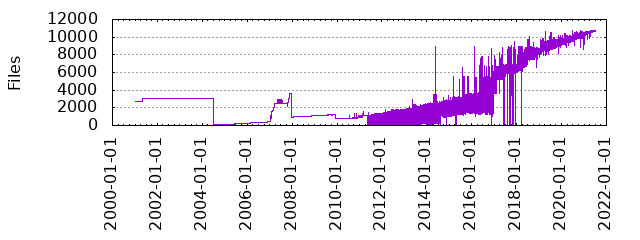

Files
- Total files
- 10696
- Total lines
- 2546049
- Average file size
- 15126.54 bytes

| Extension | Files (%) | Lines (%) | Lines/file |
|---|
| 1358 (12.70%) | 27527 (1.08%) | 20 |
| 04 | 1 (0.01%) | 0 (0.00%) | 0 |
| 1 | 1 (0.01%) | 504 (0.02%) | 504 |
| 2982809 | 1 (0.01%) | 859 (0.03%) | 859 |
| 8 | 1 (0.01%) | 420 (0.02%) | 420 |
| FreeBSD | 1 (0.01%) | 162 (0.01%) | 162 |
| S | 2 (0.02%) | 913 (0.04%) | 456 |
| SAMPLE | 1 (0.01%) | 10 (0.00%) | 10 |
| after | 1 (0.01%) | 87 (0.00%) | 87 |
| aix | 1 (0.01%) | 101 (0.00%) | 101 |
| asc | 4 (0.04%) | 241 (0.01%) | 60 |
| before | 1 (0.01%) | 87 (0.00%) | 87 |
| c | 59 (0.55%) | 10006 (0.39%) | 169 |
| cc | 1836 (17.17%) | 1036463 (40.71%) | 564 |
| ceph | 1 (0.01%) | 79 (0.00%) | 79 |
| cfg | 1 (0.01%) | 44 (0.00%) | 44 |
| cmake | 73 (0.68%) | 8133 (0.32%) | 111 |
| com | 2 (0.02%) | 28 (0.00%) | 14 |
| conf | 24 (0.22%) | 11128 (0.44%) | 463 |
| cpp | 8 (0.07%) | 900 (0.04%) | 112 |
| crush | 3 (0.03%) | 276 (0.01%) | 92 |
| crushmap | 9 (0.08%) | 660 (0.03%) | 73 |
| css | 2 (0.02%) | 104 (0.00%) | 52 |
| css_t | 1 (0.01%) | 199 (0.01%) | 199 |
| d | 1 (0.01%) | 1 (0.00%) | 1 |
| devid | 11 (0.10%) | 11 (0.00%) | 1 |
| dirs | 7 (0.07%) | 17 (0.00%) | 2 |
| disable | 1 (0.01%) | 18 (0.00%) | 18 |
| disabled | 14 (0.13%) | 249 (0.01%) | 17 |
| docs | 1 (0.01%) | 1 (0.00%) | 1 |
| dot | 2 (0.02%) | 155 (0.01%) | 77 |
| fc | 1 (0.01%) | 20 (0.00%) | 20 |
| ffsb | 1 (0.01%) | 48 (0.00%) | 48 |
| final | 1 (0.01%) | 70 (0.00%) | 70 |
| fio | 5 (0.05%) | 123 (0.00%) | 24 |
| five | 1 (0.01%) | 65 (0.00%) | 65 |
| four | 1 (0.01%) | 56 (0.00%) | 56 |
| gif | 2 (0.02%) | 892 (0.04%) | 446 |
| gperf | 1 (0.01%) | 130 (0.01%) | 130 |
| h | 1859 (17.38%) | 393804 (15.47%) | 211 |
| hh | 1 (0.01%) | 717 (0.03%) | 717 |
| hpp | 30 (0.28%) | 12028 (0.47%) | 400 |
| html | 163 (1.52%) | 12953 (0.51%) | 79 |
| i | 1 (0.01%) | 47 (0.00%) | 47 |
| ico | 2 (0.02%) | 0 (0.00%) | 0 |
| if | 1 (0.01%) | 265 (0.01%) | 265 |
| in | 50 (0.47%) | 20933 (0.82%) | 418 |
| ini | 17 (0.16%) | 935 (0.04%) | 55 |
| install | 47 (0.44%) | 252 (0.01%) | 5 |
| j2 | 9 (0.08%) | 266 (0.01%) | 29 |
| java | 16 (0.15%) | 2994 (0.12%) | 187 |
| jlibs | 1 (0.01%) | 1 (0.00%) | 1 |
| jpg | 5 (0.05%) | 1739 (0.07%) | 347 |
| js | 8 (0.07%) | 13107 (0.51%) | 1638 |
| json | 47 (0.44%) | 41191 (1.62%) | 876 |
| lua | 2 (0.02%) | 75 (0.00%) | 37 |
| map | 2 (0.02%) | 41 (0.00%) | 20 |
| mc | 1 (0.01%) | 35 (0.00%) | 35 |
| md | 18 (0.17%) | 1102 (0.04%) | 61 |
| multitree | 1 (0.01%) | 70 (0.00%) | 70 |
| nvme0n1 | 4 (0.04%) | 87 (0.00%) | 21 |
| one | 2 (0.02%) | 114 (0.00%) | 57 |
| patches | 1 (0.01%) | 820 (0.03%) | 820 |
| pkl | 79 (0.74%) | 65840 (2.59%) | 833 |
| pl | 8 (0.07%) | 878 (0.03%) | 109 |
| pm | 1 (0.01%) | 220 (0.01%) | 220 |
| png | 48 (0.45%) | 17182 (0.67%) | 357 |
| postinst | 12 (0.11%) | 662 (0.03%) | 55 |
| postrm | 2 (0.02%) | 100 (0.00%) | 50 |
| prerm | 11 (0.10%) | 178 (0.01%) | 16 |
| preset | 1 (0.01%) | 9 (0.00%) | 9 |
| pub | 1 (0.01%) | 1 (0.00%) | 1 |
| pxd | 9 (0.08%) | 1445 (0.06%) | 160 |
| pxi | 4 (0.04%) | 1766 (0.07%) | 441 |
| py | 716 (6.69%) | 196630 (7.72%) | 274 |
| pyi | 1 (0.01%) | 115 (0.00%) | 115 |
| pyx | 4 (0.04%) | 13348 (0.52%) | 3337 |
| readme | 1 (0.01%) | 14 (0.00%) | 14 |
| repo | 1 (0.01%) | 23 (0.00%) | 23 |
| reweighted | 1 (0.01%) | 73 (0.00%) | 73 |
| rst | 516 (4.82%) | 139919 (5.50%) | 271 |
| rules | 1 (0.01%) | 5 (0.00%) | 5 |
| s | 1 (0.01%) | 657 (0.03%) | 657 |
| sample | 1 (0.01%) | 12 (0.00%) | 12 |
| scss | 178 (1.66%) | 2382 (0.09%) | 13 |
| sda | 3 (0.03%) | 105 (0.00%) | 35 |
| sdb | 2 (0.02%) | 60 (0.00%) | 30 |
| sde | 1 (0.01%) | 28 (0.00%) | 28 |
| sdn | 1 (0.01%) | 53 (0.00%) | 53 |
| service | 1 (0.01%) | 14 (0.00%) | 14 |
| sh | 430 (4.02%) | 61985 (2.43%) | 144 |
| solaris | 1 (0.01%) | 32 (0.00%) | 32 |
| supp | 1 (0.01%) | 628 (0.02%) | 628 |
| svg | 11 (0.10%) | 52619 (2.07%) | 4783 |
| symbols | 1 (0.01%) | 37 (0.00%) | 37 |
| t | 116 (1.08%) | 136907 (5.38%) | 1180 |
| target | 10 (0.09%) | 76 (0.00%) | 7 |
| te | 1 (0.01%) | 163 (0.01%) | 163 |
| template | 4 (0.04%) | 115 (0.00%) | 28 |
| three | 2 (0.02%) | 122 (0.00%) | 61 |
| tp | 11 (0.10%) | 8999 (0.35%) | 818 |
| ts | 739 (6.91%) | 71280 (2.80%) | 96 |
| two | 2 (0.02%) | 122 (0.00%) | 61 |
| twoosds | 1 (0.01%) | 97 (0.00%) | 97 |
| txt | 272 (2.54%) | 137025 (5.38%) | 503 |
| typed | 1 (0.01%) | 0 (0.00%) | 0 |
| withracks | 1 (0.01%) | 1480 (0.06%) | 1480 |
| xlf | 12 (0.11%) | 79127 (3.11%) | 6593 |
| xml | 3 (0.03%) | 3471 (0.14%) | 1157 |
| yaml | 1637 (15.30%) | 28093 (1.10%) | 17 |
| yml | 105 (0.98%) | 3788 (0.15%) | 36 |